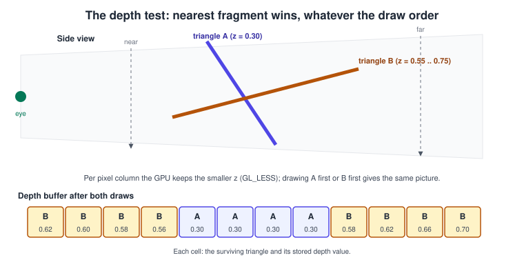
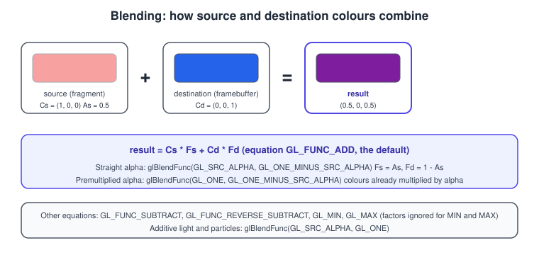
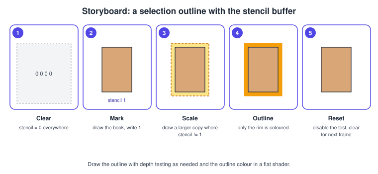

Blending, Depth and Stencil in OpenGL
|
This content was generated with the assistance of AI and should be verified against the official documentation before being relied on in production. |
After the fragment shader has produced a colour, OpenGL still decides whether that fragment survives and how it combines with what is already in the framebuffer. These per-fragment operations are not programmable; they are configured with state: the depth test keeps the nearest surface, the stencil test masks regions arbitrarily, and blending mixes the new colour with the old one for transparency and glow. Together with face culling they are what makes a scene of opaque books, a glass pane and a highlighted selection come out right. This page explains each operation, every option that controls it, the correct draw order, and a complete program that uses all of them.
The facts were checked in November 2026. The versions documented are OpenGL 4.6 and OpenGL ES 3.2 (GLSL 4.60 and GLSL ES 3.20).
The program targets a 4.1 core context, which also runs on macOS; options that need a newer version (glClipControl needs 4.5 or
GL_ARB_clip_control) are marked. The same functions exist in OpenGL ES 3.0 and later unless a note says otherwise; they are
shared with WebGL 2 under the same names. The place of these tests in the pipeline is explained in
The Rendering Pipeline and, for OpenGL, in
The OpenGL Rendering Pipeline; the general theory of transparency is in
Transparency, Blending and Post-Processing.
The order of the per-fragment operations
After rasterisation and the fragment shader, a fragment passes through these steps, in this order, each one able to discard it:
-
the scissor test (a rectangle you set with
glScissor), -
the stencil test,
-
the depth test,
-
blending, followed by the optional logical operation,
-
the write to the framebuffer, filtered by the colour, depth and stencil write masks.
Drivers may run the depth test before the fragment shader when the shader does not write depth or call discard
(early-Z), which saves the shading cost of hidden fragments. The result must look as if the order above were respected.
The depth buffer
How the depth test works
A framebuffer may have a depth attachment that stores one value per pixel (per sample when multisampled). When the depth test is
enabled with glEnable(GL_DEPTH_TEST), a fragment’s depth, in the range 0 to 1 from the viewport transformation, is compared
with the stored value using the function chosen with glDepthFunc. If the comparison passes, the fragment continues, and
if depth writing is on the stored value is replaced.

glDepthFunc value |
Passes when the incoming depth is |
|---|---|
|
less than the stored value |
|
less than or equal; common for multi-pass rendering that redraws the same geometry |
|
greater (or equal); used with reverse-Z |
|
equal or not equal; |
|
always or never |
The depth buffer is allocated by the window system: GLFW’s GLFW_DEPTH_BITS hint defaults to 24, and GLFW_STENCIL_BITS to 8,
which gives the common 24+8 format. In your own framebuffers you attach a depth texture or renderbuffer, see
Framebuffers and Render to Texture.
The related controls are:
-
glDepthMask(GL_FALSE)stops depth writes while keeping the test. Transparent geometry is drawn this way. -
glClearDepth(1.0)andglClear(GL_DEPTH_BUFFER_BIT)reset the buffer each frame; the clear is subject to the depth mask, so make sure writes are enabled when you clear, or the next frame starts with stale depth. -
glDepthRange(near, far)maps NDC depth to the window range; the default is 0 to 1. -
glEnable(GL_DEPTH_CLAMP)(OpenGL 3.2) clamps depth instead of clipping against the near and far planes, useful for shadow volumes and large objects crossing the near plane. It is not part of ES 3.2. -
glPolygonOffset(factor, units)withglEnable(GL_POLYGON_OFFSET_FILL)adds a slope-scaled and constant bias to the depth of filled polygons, used to put decals on a surface or to bias shadow maps without z-fighting.
Precision, z-fighting and reverse-Z
Perspective projection makes window depth nonlinear in eye distance. For the default NDC range of -1 to 1 and a viewer-to-surface distance \( z \) between the near plane \( n \) and the far plane \( f \):
\[ z_\{ ndc } = \frac\{ f + n }{ f - n } - \frac\{ 2 f n }{ ( f - n ) \, z } \qquad d_\{ window } = \frac\{ z_\{ ndc } + 1 }{ 2 } \]
Most of the representable values are spent close to the near plane, so two surfaces far away can end up with the same stored depth, and the one drawn last flickers through: z-fighting. The usual remedies are to push the near plane as far out as the scene allows (a near plane at 0.1 versus 0.01 is a tenfold difference in precision), to separate coplanar surfaces, to use a polygon offset for decals, and to use a 32-bit floating-point depth buffer with reverse-Z.
Reverse-Z maps the near plane to 1 and the far plane to 0 and uses a floating-point depth buffer, whose precision is densest
close to 0, which is where far geometry sits. It nearly cancels the nonlinearity. In OpenGL the default clip volume has depth
from -1 to 1, which wastes the floating-point range, so the zero-to-one convention must be selected with glClipControl (OpenGL
4.5 or GL_ARB_clip_control; on ES it is the extension GL_EXT_clip_control; not available on macOS at 4.1):
// Reverse-Z setup, OpenGL 4.5 or GL_ARB_clip_control.
glClipControl(GL_LOWER_LEFT, GL_ZERO_TO_ONE); // NDC z in [0, 1] instead of [-1, 1]
glDepthFunc(GL_GREATER); // nearer fragments have LARGER depth
glClearDepth(0.0); // clear to "infinitely far"
// The depth attachment must be floating point: GL_DEPTH_COMPONENT32F or GL_DEPTH32F_STENCIL8.
// Projection with the far plane at infinity and depth 1 at the near plane (GLM, right handed):
glm::mat4 reverseZInfinitePerspective(float fovY, float aspect, float zNear)
{
const float f = 1.0f / std::tan(fovY * 0.5f);
glm::mat4 m(0.0f);
m[0][0] = f / aspect;
m[1][1] = f;
m[2][3] = -1.0f;
m[3][2] = zNear; // column-major: [column][row]
return m;
}Source: OpenGL 4 reference: glClipControl and glDepthFunc.
The conventions of the projection chain are discussed in
Coordinate Systems and Transforms. With the 4.1 baseline
of this page, keep the default GL_LESS and a 24-bit depth buffer and use a sensible near plane.
Face culling
A triangle seen from behind is almost never needed for a closed mesh, so the GPU can discard it before rasterisation.
Culling is enabled with glEnable(GL_CULL_FACE). glFrontFace says which winding counts as front (counter-clockwise,
GL_CCW, by default, measured in window coordinates), and glCullFace chooses GL_BACK (default), GL_FRONT or
GL_FRONT_AND_BACK. Culling halves the rasterisation work of closed meshes; double-sided surfaces such as a sheet of
paper, or foliage, need it disabled or a second pass. Importing a model with the opposite winding, or a mirror transform with a
negative scale, flips faces and makes the object appear inside out: change glFrontFace or fix the data. The shader built-in
gl_FrontFacing tells a fragment which side it is on, for two-sided lighting.
Blending
The blend equation
When blending is enabled with glEnable(GL_BLEND), the colour written is a combination of the fragment’s source colour
\( C_s \) and the framebuffer’s destination colour \( C_d \), weighted by factors \( F_s \) and \( F_d \):
\[ C = C_s F_s \; \oplus \; C_d F_d \]
where \( \oplus \) is the blend equation, normally addition. glBlendFunc(sfactor, dfactor) sets the two factors for colour and
alpha alike; glBlendFuncSeparate(srcRGB, dstRGB, srcA, dstA) sets them separately, and glBlendEquation(mode) (or
glBlendEquationSeparate) chooses the operator.

| Factors | Meaning |
|---|---|
|
0 and 1 |
|
per-channel source or destination colour |
|
alpha of the source or destination |
|
the colour set with |
|
the factor min(As, 1 - Ad), made for an order-dependent polygon antialiasing technique of early OpenGL |
|
the second output of a fragment shader, for dual-source blending (OpenGL 3.3, ES via an extension) |
| Equation | Result |
|---|---|
|
\( C_s F_s + C_d F_d \) |
|
\( C_s F_s - C_d F_d \) |
|
\( C_d F_d - C_s F_s \) |
|
component-wise minimum or maximum; the factors are ignored |
Blending applies to each colour attachment: glBlendFunci and glBlendEquationi (OpenGL 4.0) set a different mode for each
draw buffer, which matters for deferred shading and render targets that hold non-colour data. Blending is not applied to
integer attachments, and the blend result on a floating-point target is not clamped. When the framebuffer is sRGB
(GL_FRAMEBUFFER_SRGB), the destination is decoded to linear before blending and the result is encoded again, which is correct
and is one more reason to enable it, see
Colour Spaces, HDR and Tone Mapping.
Common blend modes
| Look | Call | Typical use |
|---|---|---|
Alpha blending (straight alpha) |
|
glass, UI, soft edges |
Premultiplied alpha |
|
textures stored premultiplied, correct filtering, compositing layers |
Additive |
|
fire, sparks, dust, light shafts |
Multiply |
|
shadows blobs, tinted glass, lightmaps |
Screen (soft add) |
|
glow, bloom composition |
Straight versus premultiplied alpha deserves care. With straight alpha the colour channels hold the full-intensity colour and alpha
says how much to use. Filtering a straight-alpha texture bilinearly mixes the colour of transparent texels (often black) into the
edges, producing dark halos. Premultiplied alpha stores colour already multiplied by alpha, filters correctly and composites with
glBlendFunc(GL_ONE, GL_ONE_MINUS_SRC_ALPHA); it is the preferred form for layers and for the textures of 2D engines. If an
image file has straight alpha, either premultiply in the shader (color.rgb *= color.a) or in the asset pipeline.
Drawing transparent objects in the right order
Blending is not commutative: the result depends on what is already in the framebuffer, so transparent surfaces must be drawn in back-to-front order after all opaque geometry, with depth writes disabled (so a transparent surface does not hide the ones behind it) and the depth test kept on (so opaque geometry still hides them).
Sorting is per object (or per triangle for intersecting transparent meshes). Interpenetrating or cyclic transparent surfaces cannot be ordered at all; the usual solutions are to split the meshes, to use alpha testing (below) for cut-outs, or an order-independent technique such as weighted blended transparency, which accumulates into two render targets and needs no sorting at the price of some accuracy. Cheap particles that blend additively need no sorting, since addition is commutative.
Alpha testing was a fixed-function feature in old OpenGL (glAlphaFunc) and is gone from the core profile; the replacement is
discard in the fragment shader, which also disables early-Z for the shader:
// Cut-out foliage, grilles, the holes in a bookshelf: no blending, no sorting.
vec4 texel = texture(uAlbedoMap, vUV);
if (texel.a < uAlphaCutoff) discard; // glTF alphaMode MASK uses alphaCutoff, default 0.5For multisampled framebuffers glEnable(GL_SAMPLE_ALPHA_TO_COVERAGE) turns the shader’s alpha into a coverage mask, giving
soft cut-out edges without sorting.
The stencil buffer
What it is
The stencil buffer holds an integer per pixel, normally 8 bits, packed with depth in a GL_DEPTH24_STENCIL8 or
GL_DEPTH32F_STENCIL8 format. The stencil test compares a reference value with the stored value and, depending on the result of the
stencil test and of the depth test, applies an operation that can modify the stored value. It is a general mask: a mirror’s
silhouette, a portal, a shadow volume, a light’s area of influence, or a selection outline.
| Call | Role |
|---|---|
|
turns the stencil test (and stencil writes) on |
|
passes when |
|
what to do when the stencil test fails, when it passes but depth fails, and when both pass: |
|
which bits can be written; |
|
different settings for front-facing and back-facing polygons |
|
reset the buffer; subject to the stencil mask |
A selection outline
The classic outline draws the selected object once while writing 1 into the stencil buffer, then draws a slightly larger flat-coloured copy only where the stencil is not 1, so only the rim around the original is visible.

A complete example: books, a glass pane and a selection outline
The program draws three opaque books on a shelf, one of them selected with a yellow outline, and two glass panes in front sorted back to front. It is self-contained: the shaders are embedded, normals come from screen-space derivatives so the box needs only positions. It uses the includes, CMake setup and glad2/GLFW initialisation of Lighting with Blinn-Phong and Getting Started on the Desktop.
#include <glad/gl.h>
#include <GLFW/glfw3.h>
#include <glm/glm.hpp>
#include <glm/gtc/matrix_transform.hpp>
#include <glm/gtc/type_ptr.hpp>
#include <algorithm>
#include <cmath>
#include <cstdio>
#include <cstdlib>
#include <vector>
static const char* kVert = R"(#version 410 core
layout(location = 0) in vec3 aPos;
uniform mat4 uModel;
uniform mat4 uViewProj;
out vec3 vWorld;
void main() {
vec4 w = uModel * vec4(aPos, 1.0);
vWorld = w.xyz;
gl_Position = uViewProj * w;
})";
static const char* kFrag = R"(#version 410 core
in vec3 vWorld;
uniform vec4 uColor;
uniform bool uFlat; // outline pass: no lighting
out vec4 FragColor;
void main() {
vec3 n = normalize(cross(dFdx(vWorld), dFdy(vWorld))); // face normal from derivatives
float diff = max(dot(n, normalize(vec3(0.4, 0.8, 0.6))), 0.0);
vec3 rgb = uFlat ? uColor.rgb : uColor.rgb * (0.25 + 0.75 * diff);
FragColor = vec4(rgb, uColor.a);
})";
static GLuint compile(GLenum type, const char* src)
{
GLuint s = glCreateShader(type);
glShaderSource(s, 1, &src, nullptr);
glCompileShader(s);
GLint ok = 0;
glGetShaderiv(s, GL_COMPILE_STATUS, &ok);
if (!ok) { char log[1024]; glGetShaderInfoLog(s, sizeof log, nullptr, log); std::fprintf(stderr, "%s\n", log); std::exit(1); }
return s;
}
struct Item { glm::vec3 center; glm::vec3 size; glm::vec4 color; };
int main()
{
if (!glfwInit()) return 1;
glfwWindowHint(GLFW_CONTEXT_VERSION_MAJOR, 4);
glfwWindowHint(GLFW_CONTEXT_VERSION_MINOR, 1);
glfwWindowHint(GLFW_OPENGL_PROFILE, GLFW_OPENGL_CORE_PROFILE);
glfwWindowHint(GLFW_OPENGL_FORWARD_COMPAT, GLFW_TRUE);
glfwWindowHint(GLFW_DEPTH_BITS, 24);
glfwWindowHint(GLFW_STENCIL_BITS, 8); // make sure a stencil buffer exists
GLFWwindow* win = glfwCreateWindow(960, 640, "Bookshelf GL: depth, blend, stencil", nullptr, nullptr);
if (!win) { glfwTerminate(); return 1; }
glfwMakeContextCurrent(win);
if (!gladLoadGL(glfwGetProcAddress)) return 1;
glfwSwapInterval(1);
GLuint prog = glCreateProgram();
glAttachShader(prog, compile(GL_VERTEX_SHADER, kVert));
glAttachShader(prog, compile(GL_FRAGMENT_SHADER, kFrag));
glLinkProgram(prog);
// Unit box from 8 corners; bit 0 = x, bit 1 = y, bit 2 = z, counter-clockwise from outside.
std::vector<glm::vec3> corners;
for (int i = 0; i < 8; ++i)
corners.push_back({(i & 1) ? 0.5f : -0.5f, (i & 2) ? 0.5f : -0.5f, (i & 4) ? 0.5f : -0.5f});
const unsigned short idx[36] = {
4,5,7, 4,7,6, 1,0,2, 1,2,3, 5,1,3, 5,3,7,
0,4,6, 0,6,2, 6,7,3, 6,3,2, 0,1,5, 0,5,4 };
GLuint vao, vbo, ebo;
glGenVertexArrays(1, &vao);
glGenBuffers(1, &vbo);
glGenBuffers(1, &ebo);
glBindVertexArray(vao);
glBindBuffer(GL_ARRAY_BUFFER, vbo);
glBufferData(GL_ARRAY_BUFFER, corners.size() * sizeof(glm::vec3), corners.data(), GL_STATIC_DRAW);
glBindBuffer(GL_ELEMENT_ARRAY_BUFFER, ebo);
glBufferData(GL_ELEMENT_ARRAY_BUFFER, sizeof idx, idx, GL_STATIC_DRAW);
glEnableVertexAttribArray(0);
glVertexAttribPointer(0, 3, GL_FLOAT, GL_FALSE, sizeof(glm::vec3), nullptr);
const GLint uModel = glGetUniformLocation(prog, "uModel");
const GLint uViewProj = glGetUniformLocation(prog, "uViewProj");
const GLint uColor = glGetUniformLocation(prog, "uColor");
const GLint uFlat = glGetUniformLocation(prog, "uFlat");
// Shelf board, three books (index 1 is selected), two glass panes in front.
const Item shelf{{0, -0.55f, 0}, {3.2f, 0.1f, 0.8f}, {0.45f, 0.30f, 0.18f, 1}};
const std::vector<Item> books = {
{{-0.8f, 0.0f, 0}, {0.3f, 1.0f, 0.6f}, {0.60f, 0.12f, 0.12f, 1}},
{{-0.3f, -0.05f, 0}, {0.25f, 0.9f, 0.6f}, {0.15f, 0.35f, 0.65f, 1}},
{{ 0.2f, 0.0f, 0}, {0.35f, 1.0f, 0.6f}, {0.20f, 0.50f, 0.25f, 1}},
};
const int selected = 1;
std::vector<Item> panes = {
{{-0.5f, 0.0f, 0.7f}, {1.0f, 1.2f, 0.03f}, {0.5f, 0.8f, 1.0f, 0.30f}},
{{ 0.4f, 0.0f, 1.1f}, {1.0f, 1.2f, 0.03f}, {1.0f, 0.8f, 0.4f, 0.30f}},
};
auto drawBox = [&](const Item& it, float grow, bool flat, const glm::vec4& color) {
glm::mat4 m = glm::translate(glm::mat4(1.0f), it.center);
m = glm::scale(m, it.size * grow);
glUniformMatrix4fv(uModel, 1, GL_FALSE, glm::value_ptr(m));
glUniform4fv(uColor, 1, glm::value_ptr(color));
glUniform1i(uFlat, flat ? 1 : 0);
glDrawElements(GL_TRIANGLES, 36, GL_UNSIGNED_SHORT, nullptr);
};
glEnable(GL_DEPTH_TEST);
glEnable(GL_CULL_FACE);
glBlendFunc(GL_SRC_ALPHA, GL_ONE_MINUS_SRC_ALPHA);
while (!glfwWindowShouldClose(win)) {
int w, h;
glfwGetFramebufferSize(win, &w, &h);
glViewport(0, 0, w, h);
const glm::vec3 eye(1.5f * std::sin(float(glfwGetTime()) * 0.4f), 0.8f, 4.0f);
const glm::mat4 view = glm::lookAt(eye, glm::vec3(0, 0, 0), glm::vec3(0, 1, 0));
const glm::mat4 proj = glm::perspective(glm::radians(45.0f), float(w) / float(h ? h : 1), 0.1f, 50.0f);
const glm::mat4 vp = proj * view;
// 1. Clear everything. Writes must be enabled or the clear is masked.
glDepthMask(GL_TRUE);
glStencilMask(0xFF);
glClearColor(0.07f, 0.07f, 0.10f, 1.0f);
glClearStencil(0);
glClear(GL_COLOR_BUFFER_BIT | GL_DEPTH_BUFFER_BIT | GL_STENCIL_BUFFER_BIT);
glUseProgram(prog);
glUniformMatrix4fv(uViewProj, 1, GL_FALSE, glm::value_ptr(vp));
glBindVertexArray(vao);
// 2. Opaque pass. Only the selected book writes 1 into the stencil buffer.
glEnable(GL_STENCIL_TEST);
glStencilFunc(GL_ALWAYS, 1, 0xFF);
glStencilOp(GL_KEEP, GL_KEEP, GL_REPLACE); // replace when stencil and depth pass
glStencilMask(0x00); // default: do not touch the stencil
drawBox(shelf, 1.0f, false, shelf.color);
for (int i = 0; i < int(books.size()); ++i) {
glStencilMask(i == selected ? 0xFF : 0x00);
drawBox(books[i], 1.0f, false, books[i].color);
}
// 3. Outline pass: a larger flat copy where the stencil is not 1.
glStencilFunc(GL_NOTEQUAL, 1, 0xFF);
glStencilMask(0x00);
drawBox(books[selected], 1.08f, true, glm::vec4(1.0f, 0.85f, 0.1f, 1.0f));
glDisable(GL_STENCIL_TEST);
// 4. Transparent pass: sorted far to near, blending on, depth writes off.
std::sort(panes.begin(), panes.end(), [&](const Item& a, const Item& b) {
return glm::distance(eye, a.center) > glm::distance(eye, b.center);
});
glEnable(GL_BLEND);
glDepthMask(GL_FALSE);
for (const Item& p : panes) drawBox(p, 1.0f, false, p.color);
glDepthMask(GL_TRUE);
glDisable(GL_BLEND);
glfwSwapBuffers(win);
glfwPollEvents();
}
glfwTerminate();
return 0;
}Source: OpenGL 4 reference: glStencilFunc, glStencilOp, glBlendFunc, glDepthMask and glDepthFunc.
Three details make this work. The stencil mask is 0x00 for everything except the selected
book, so only that book leaves a 1 in the buffer. The outline pass tests GL_NOTEQUAL against 1 with the stencil mask at zero, so it
cannot alter the buffer. And the panes are drawn last, with depth writes off, sorted by the distance from the eye to their
centre. The outline keeps the depth test on, so books in front of the selected one hide its outline, which is usually what
you want; to draw an outline that shows through other objects, disable the depth test for that pass.
The scaled-copy outline is approximate: scaling about the centre of a book thickens its sides evenly but is not an exact offset for concave shapes. Alternatives are drawing the back faces extruded along the normals in the vertex shader, or an edge-detection post-process on an ID buffer, see Text, UI and Input for the ID buffer.
Common mistakes
-
No depth buffer. The hint was not requested, or an FBO has no depth attachment, so triangles appear in draw order. Query the attachment with
glGetFramebufferAttachmentParameterivand check the framebuffer status. -
Stale depth.
glDepthMask(GL_FALSE)left on whenglClearruns; the buffer is not cleared and old frames ghost through. -
Near plane too close. A near plane of 0.001 destroys depth precision; start from 0.1 and measure.
-
Transparent objects written to the depth buffer. A transparent surface drawn first hides everything behind it. Disable depth writes for the blended pass.
-
Drawing transparent objects before opaque ones, or unsorted: the colour order is wrong and objects pop.
-
Blending with straight alpha textures at the edges. Dark halos; premultiply.
-
Forgetting
glEnable.glBlendFuncandglDepthFuncset state but do nothing while the test is disabled. -
Culling the wrong face. Models with the opposite winding turn inside out; flip
glFrontFace. A negative scale flips winding. -
Stencil writes left on.
glStencilMask(0xFF)while drawing the scene makes every object write, and the outline disappears. -
Z-fighting from coplanar geometry. Offset with
glPolygonOffsetor separate the surfaces. -
A 16-bit depth buffer. It is far less precise than 24-bit; prefer 24 bits or floating point.
-
Multisampling and alpha.
GL_SAMPLE_ALPHA_TO_COVERAGEneeds a multisampled target; on a single-sample buffer it does nothing useful.
Performance notes
-
Draw opaque objects front to back (roughly) so early-Z rejects hidden fragments before they are shaded; a depth pre-pass that writes only depth and then draws with
GL_EQUALremoves overdraw at the price of drawing geometry twice. -
Blended draws are always shaded in full; large transparent surfaces and many layers of particles are fill-rate bound. Reduce the number of layers, shrink particle quads to their visible area, and render particles at lower resolution if needed.
-
Using
discardor writinggl_FragDepthdisables early-Z for that shader on many GPUs; keep alpha-tested geometry in a separate batch from opaque geometry. -
Culling back faces halves the rasterisation work of closed meshes.
-
On tile-based mobile GPUs, avoid reading the framebuffer for blending when possible, clear or invalidate depth and stencil after use (
glInvalidateFramebuffer, ES 3.0) so tiles are not written back to memory, and keep blending to a minimum; see Performance. -
Sorting transparent objects costs little; do it per frame on the CPU.
-
A 32-bit float depth plus 8-bit stencil format (
GL_DEPTH32F_STENCIL8) uses 8 bytes per pixel in practice, more thanGL_DEPTH24_STENCIL8; choose it only when you need the precision.
What the books cover and where they are outdated
Depth testing, blending and the stencil buffer are among the parts of the older books that still apply almost unchanged: the
functions glDepthFunc, glBlendFunc, glStencilFunc and glStencilOp are the same in OpenGL 4.6 and in ES 3.2. What changed is
what surrounds them.
| Older material | What it says | What is current |
|---|---|---|
OpenGL SuperBible, 4th edition (2007), hidden-surface and blending chapters |
Alpha test with |
Alpha test is |
OpenGL ES 2.0 and 3.0 Programming Guides (2008, 2014) |
Per-fragment operations of ES 2.0 and 3.0, EGL configuration attributes for depth and stencil |
Same functions in ES 3.2; ES 3.0 added mandatory sized depth formats and depth textures; |
OpenGL ES 2 and 3 books and course notes using GLUT |
|
Request the buffers with |
Recent changes
-
OpenGL 4.0 (2010) added per-draw-buffer blending (
glBlendFunci); OpenGL 3.3 added dual-source blending and OpenGL 4.5 (2014) addedglClipControl, which makes reverse-Z practical. -
OpenGL 4.6 (2017, revision 2022) added
GL_ARB_polygon_offset_clamp, a clamp value forglPolygonOffsetClamp. -
OpenGL ES 3.2 (2015) added per-draw-buffer blending and the advanced blend equations of
KHR_blend_equation_advanced(multiply, screen, overlay and others). -
For physically based materials that use the alpha modes opaque, mask and blend of glTF, see PBR Basics; for rendering to depth textures for shadows, Shadow Mapping.
References
-
OpenGL 4 reference pages (glDepthFunc, glDepthMask, glClipControl, glBlendFunc, glBlendEquation, glStencilFunc, glStencilOp, glCullFace, glPolygonOffset)
-
OpenGL 4.6 core profile specification (chapter on per-fragment operations)
-
GLFW window guide (framebuffer hints: depth, stencil and sRGB bits)